#~~~ Check if sample data exists on disk. If not, download from GitHub repository
if (dir.exists("SampleData-master")==FALSE){
download.file(url = "https://github.com/Vinit-Sehgal/SampleData/archive/master.zip",
destfile = "SampleData-master.zip")
# Unzip the downloaded .zip file
unzip(zipfile = "SampleData-master.zip")
list.files("./SampleData-master") # List folder contents
}4.1 Raster Arithmetic Operations
Arithmetic, comparison and logical operations on SpatRasters use the same operators as those used for simple vector-like operations. These operators are listed below:
a) Arithmetic operators
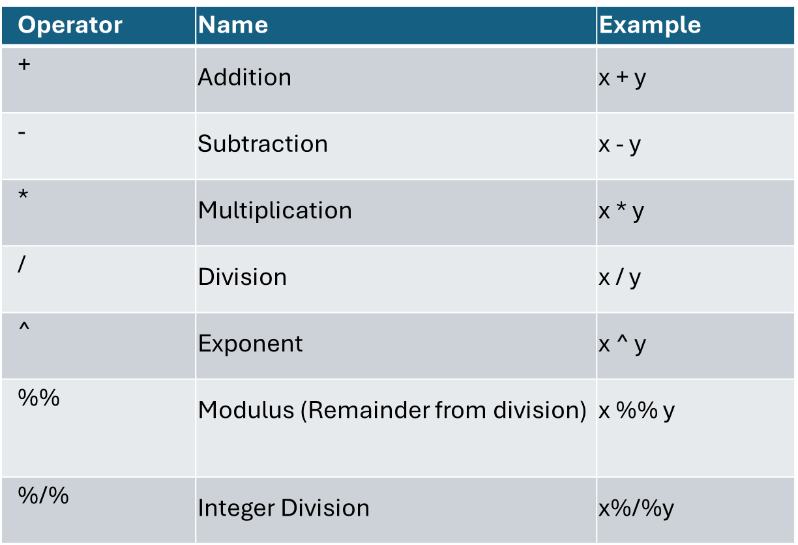
b) Comparison operators
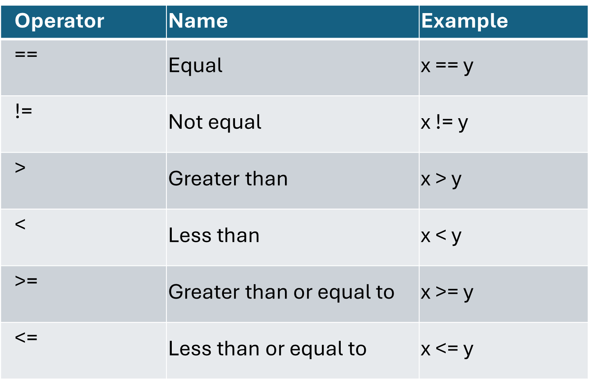
c) Logical operators
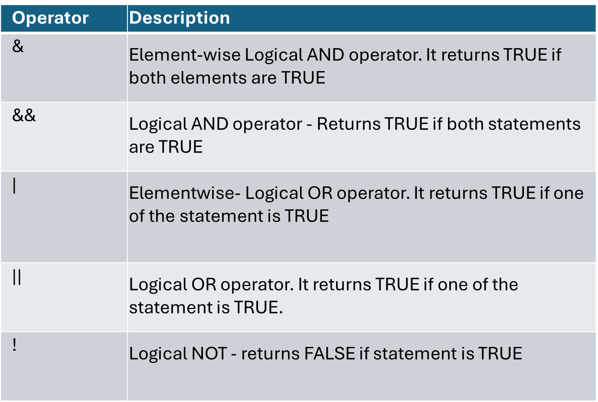
4.1.1 Single Raster Operations
The application of these operators on rasters can be conceptualized as element-wise operations on a matrix. For example, assume A is a raster with values shown in the matrix form as below:
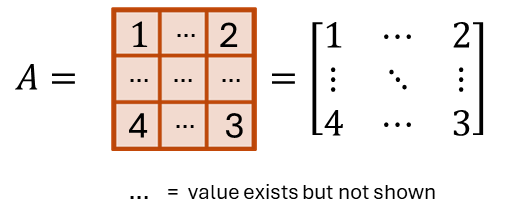
Then, A + 1 will be:
Note how each element of the matrix gets an addition of 1. Similarly, for A x 2, each element of A will be multiplied by 2 as:
and, A ^ 2 will be given as:
Logical operations can also be carried out in a similar fashion. For example, if we were to test if the cell values of A are greater than 3 (i.e. A > 3), it will be written as:
Now let us try a few examples of arithmetic, comparison and logical operations on SpatRasters. Before we begin this chapter, let us ensure that we have the sample dataset necessary for the analysis, otherwise, download the files from the GitHub repository using the following codes:
Taking example of SMAP soil moisture raster let’s practice the application of arithmetic operations on SpatRasters. We start by importing the SpatRaster in the current R environment.
library(terra) # Import library
# Import SMAP soil moisture raster from the downloaded folder
sm=terra::rast("./SampleData-master/raster_files/SMAP_SM.tif")
print(sm)class : SpatRaster
dimensions : 456, 964, 1 (nrow, ncol, nlyr)
resolution : 0.373444, 0.373444 (x, y)
extent : -180, 180, -85.24595, 85.0445 (xmin, xmax, ymin, ymax)
coord. ref. : lon/lat WGS 84 (EPSG:4326)
source : SMAP_SM.tif
name : SMAP_SM
min value : 0.01999998
max value : 0.87667608 # Add 1 to raster values
sm2=sm+1
print(sm2) #Notice the max and min values have increased by 1. class : SpatRaster
dimensions : 456, 964, 1 (nrow, ncol, nlyr)
resolution : 0.373444, 0.373444 (x, y)
extent : -180, 180, -85.24595, 85.0445 (xmin, xmax, ymin, ymax)
coord. ref. : lon/lat WGS 84 (EPSG:4326)
source(s) : memory
varname : SMAP_SM
name : SMAP_SM
min value : 1.020000
max value : 1.876676 # Multiply raster values by 2
sm2=sm*2
plot(sm2, main= "sm*2") # Try sm2=sm*10, or sm2=sm^2 and see the difference in sm2 values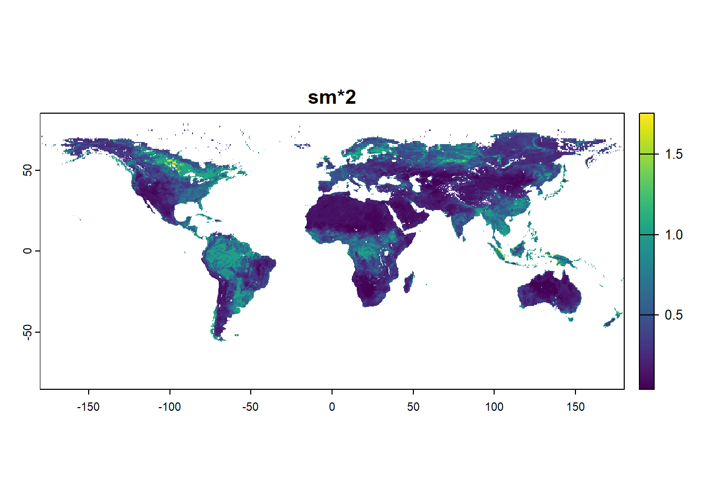
Similarly, logical operations can also be carried out on rasters with ease in R. Logical operators can be a convenient tool for raster data manipulation. For example, any subset of values can be manipulated based on a user-defined logical criteria.
# Are cell values of sm raster greater than 0.3?
sm=terra::rast("./SampleData-master/raster_files/SMAP_SM.tif")
sm2=sm>0.3
plot(sm2, main="is cell value >0.3") # Notice that the raster has only True and False values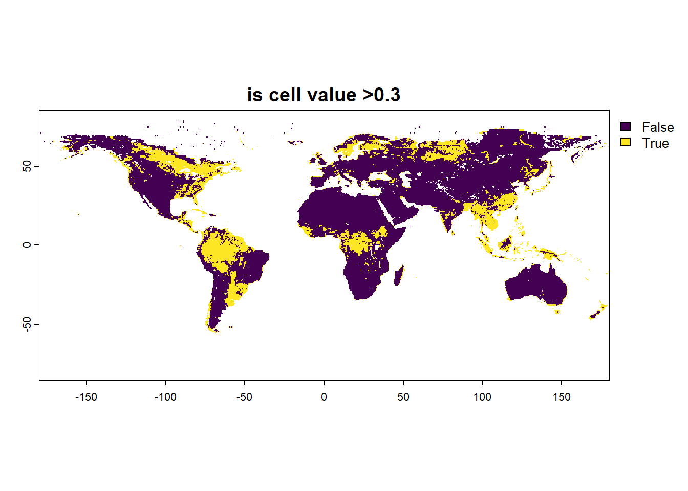
# Replace all values of sm>0.3 with 0.5
sm=terra::rast("./SampleData-master/raster_files/SMAP_SM.tif")
sm[sm>0.3]=0.5
plot(sm, main="replace sm>0.3 with 0.5")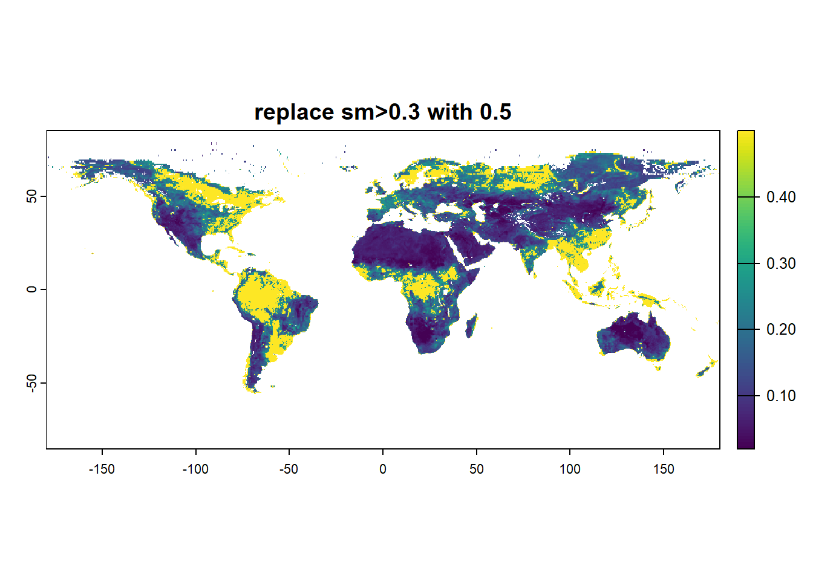
# Or replace all values of sm>0.3 with NA
sm=terra::rast("./SampleData-master/raster_files/SMAP_SM.tif")
sm[sm>0.3]=NA
plot(sm, main="replace sm>0.3 with NA")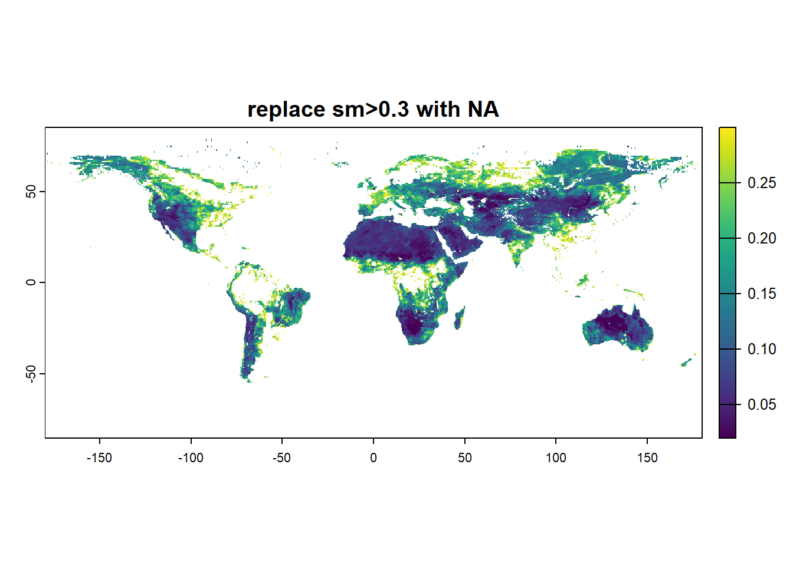
# Reaplace all NA values with 0
sm=terra::rast("./SampleData-master/raster_files/SMAP_SM.tif")
sm[is.na(sm)]=0
plot(sm)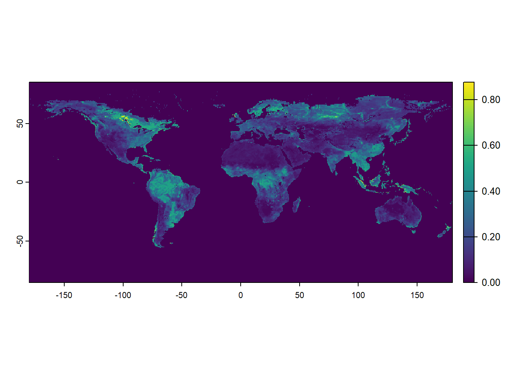
Satellites record observations in regularly spaced swaths as they orbit around the globe. In the case of SMAP satellite, it takes 2-3 days to cover the Earth. So far, we used a pre-processed soil moisture raster that provided 3-day averaged soil moisture using rasters from individual days.
Now, let us evaluate daily raster available from SMAP (pixel recorded at 6 AM local time). Notice that this raster is patchy and uses a fill value (values assigned to missing observations) of -9999. Replacing these fill values with NA prior to statistical analysis are highly useful.
# Reaplace fill values with NA
sm=rast("./SampleData-master/raster_files/SMAP_L3_SM_P_20150401_R17000_002_Soil_Moisture_Retrieval_Data_AM_soil_moisture_867a5e36.tif")
smFilter=sm # Copy original raster before manipulation
smFilter[smFilter==-9999]=NA # Replace negative values with -9999
# Plot original and manipulated raster
layout(matrix(1:2, ncol = 2)) # Specify layout for plots
plot(sm, main= "raw raster with fill values")
plot(smFilter, main="Post filtering -9999")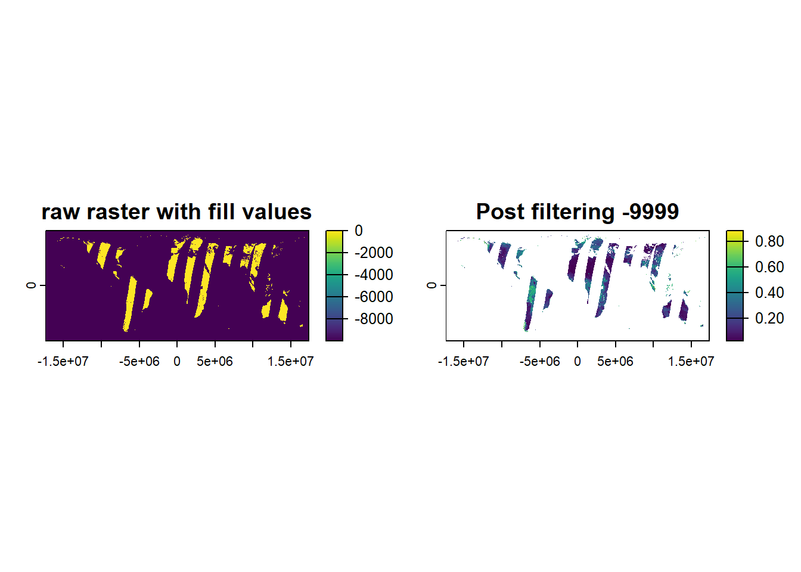
4.1.2 Multi-Raster Operations
So far we saw examples of arithmetic/ logical operations on a single raster. The tenets of arithmetic operations discussed earlier are also applicable for operations on two (or more) rasters. These operations are carried out cell-wise between the corresponding pixels of the raster layers. Suppose, another raster B is given as:
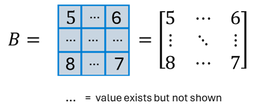
then, A+B will be:
Similarly, AxB will also be a cell-wise multiplication of respective data values:
For this illustration, we will use rootzone (0-100 cm depth) soil moisture from NASA’s Catchment Land Surface Model (provided as SMAP science Level 4 product) for Contiguous U.S. over a period of three consecutive days i.e. December 13-15, 2021.
SMday1=rast("./SampleData-master/SMAPL4_rasters/SMAP_L4_SM_gph_20211213T103000_Vv6030_001_Geophysical_Data_sm_rootzone_2052db45.tif")
SMday2=rast("./SampleData-master/SMAPL4_rasters/SMAP_L4_SM_gph_20211214T103000_Vv6030_001_Geophysical_Data_sm_rootzone_22156243.tif")
SMday3=rast("./SampleData-master/SMAPL4_rasters/SMAP_L4_SM_gph_20211215T103000_Vv6030_001_Geophysical_Data_sm_rootzone_23bd7fe2.tif")
layout(matrix(1:3, ncol = 1)) # Specify layout
plot(SMday1, main="Rootzone SM day1")
plot(SMday2, main="Rootzone SM day2")
plot(SMday3, main="Rootzone SM day3")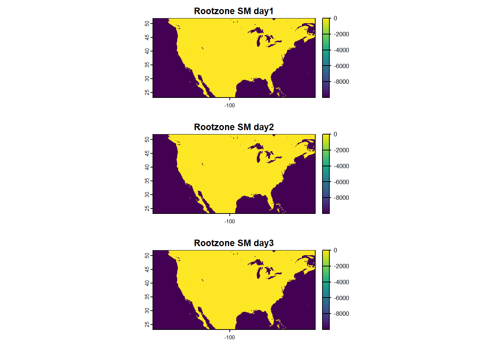
Note that we can not make out the differences in the rasters as the colors are skewed by the high negative fill value for missing data in the rasters. So, we first remove the fill values (i.e. cells valued at -9999) with NA.
SMday1[SMday1==-9999]=NA # Replace negative values with -9999
SMday2[SMday2==-9999]=NA # Replace negative values with -9999
SMday3[SMday3==-9999]=NA # Replace negative values with -9999
layout(matrix(1:3, ncol = 1)) # Specify layout
plot(SMday1, main="SM day1, filtered")
plot(SMday2, main="SM day2, filtered")
plot(SMday3, main="SM day3, filtered")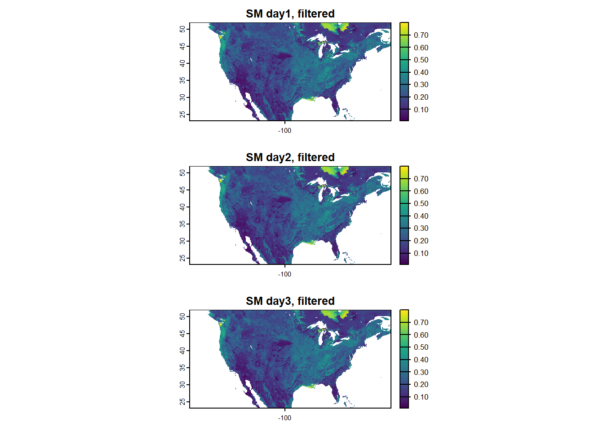
Now, let’s calculate the change in soil moisture values between days 1-2 and 1-3. Can we identify a region which showed anomalous wetting during the three days of observation?
delta12=SMday1-SMday2
delta13=SMday1-SMday3
layout(matrix(1:2, ncol = 1)) # Specify layout
plot(delta12, main="SM difference (day 1 & 2")
plot(delta13, main="SM difference (day 1 & 3")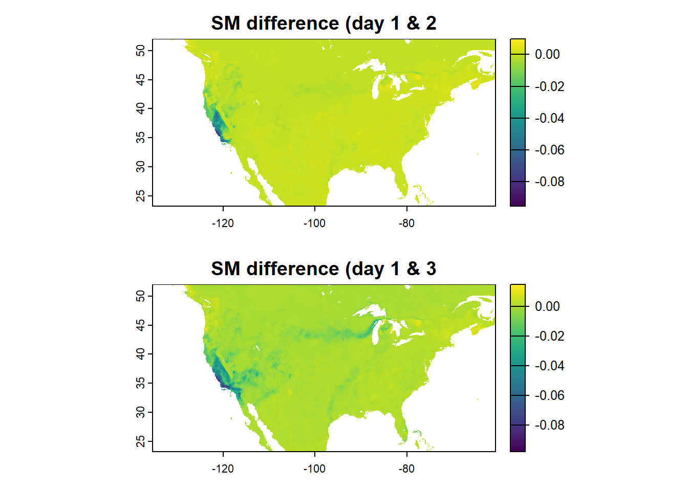
Curious to know why Southern California showed such high levels of wetting? Check out: ’Storm of the season’ dumps record-breaking rainfall on SoCal and snow in the mountains - Los Angeles Times (latimes.com).
4.2 Raster Statistics
We are all familiar with common statistical functions available in base R for summarizing arrays, such as: min, max, range, sum, stdev, median, mean, modal. These functions are applied using the global function, which calculates the “global” statistics based on the values of all cells within a raster layer. Global is a versatile function and can also be used to apply more complex user-defined operations on rasters. Let us now look at some examples:
library(terra)
# Import SMAP soil moisture raster from the downloaded folder
sm=terra::rast("./SampleData-master/raster_files/SMAP_SM.tif")
# Summary statistics
global(sm, mean, na.rm = T) # Calculate mean, while ignoring NA values mean
SMAP_SM 0.209402# This is equivalent to:
sm_val=values(sm) # Create array of cell values of raster
mean(sm_val, na.rm = T) # Calculate mean of cell values[1] 0.209402Use of global function is equivalent to applying a function on all cell values
global(sm, sd, na.rm = T) # Calculate standard deviation, while ignoring NA values sd
SMAP_SM 0.1434444# OR
sd(values(sm), na.rm = T) # Calculate mean of cell values[1] 0.1434444# Similarly, for finding quantiles of a raster layer
global(sm, quantile, probs = c(0.25, 0.75), na.rm = T) # Calculate 25th and 75th percentiles of the ratser layer X25. X75.
SMAP_SM 0.09521707 0.2922016# OR
quantile(values(sm), probs = c(0.25, 0.75), na.rm = T) 25% 75%
0.09521707 0.29220164 We can also generate common summary statistics plots using functions such as hist (histogram), barplot (box and whisker plot), etc.
sm=terra::rast("./SampleData-master/raster_files/SMAP_SM.tif")
# Plot summary using standard statistical functions
layout(matrix(1:2, ncol = 2)) # Specify layout
hist(sm)
boxplot(sm)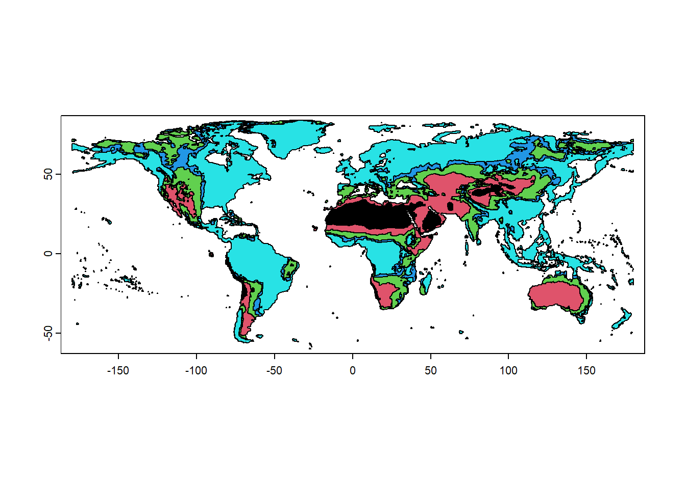
4.2.1 User-defined Functions for Raster Statistics
User-defined functions can also be applied to raster layer using the global function for specific operations. A user can define their own function with specific instructions which will be executed everytime the function is called. A simple template of a typical R function is given below:
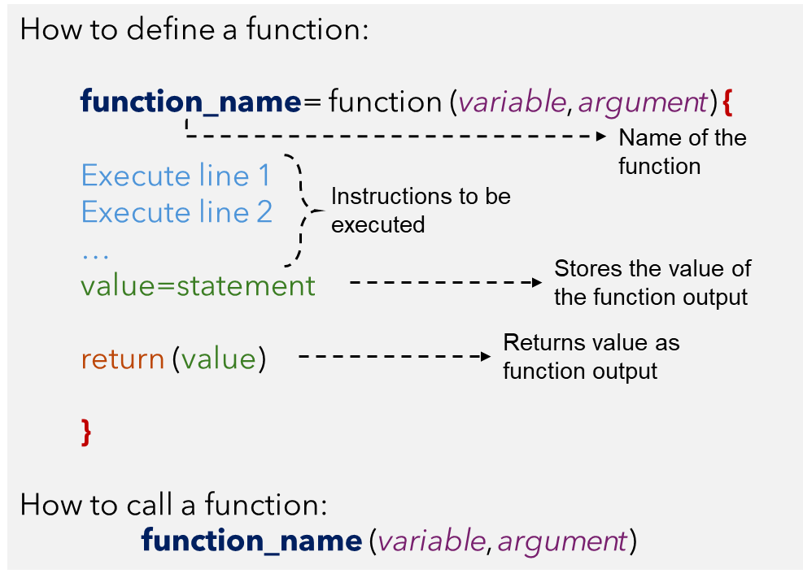
Let us revisit the application of the quantile function by passing it through a user-defined function with global. In the quant_fun shown below function, myRas is the raster whose values are being summarized. Notice how instruction for na.rm is passed through the ignoreNA argument.
# User-defined statistics by defining own function.
quant_fun = function(myRas, ignoreNA=TRUE){
p=quantile(myRas, probs = c(0.25, 0.75), na.rm=ignoreNA)
return(p)
}
global(sm, quant_fun) # 25th, and 75th percentile of each layer X25. X75.
SMAP_SM 0.09521707 0.2922016# This is equivalent to:
quant_fun(values(sm)) 25% 75%
0.09521707 0.29220164 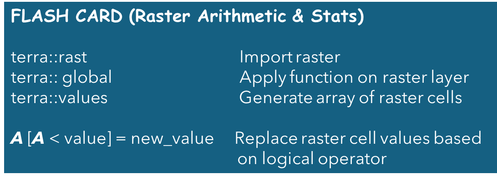
4.3 Exercise #2
Use the raster files in SampleData-master/SMAPL4_rasters folder, perform the tasks as listed below:
Task 1: Write a user-defined function to count the number of pixels within the range [0.3, 0.4] for 20211213. Use
globalto implement your function. Pass the specified range as an input argument to the function.Task 2: Compared to 20211213, what is the percentage change in 20211215 for the pixels within the [0.3, 0.4] range?
Task 3: Make a multivariate plot (2 or more variables on the same axis) comparing the density distribution of soil moisture for 20211213 and 20211215?